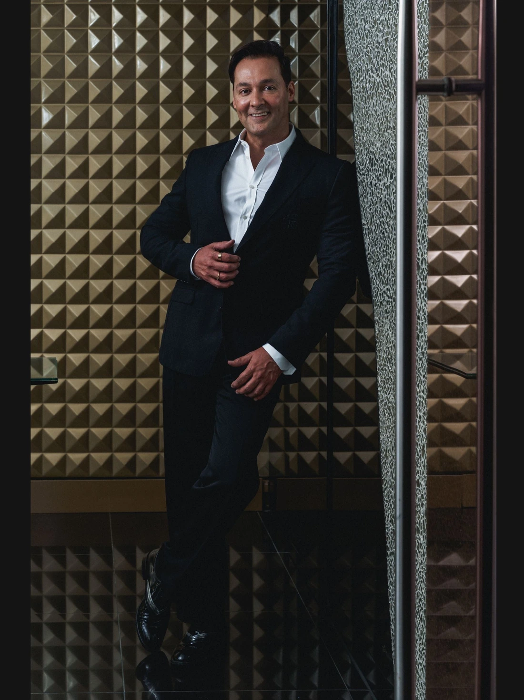

El cirujano
Veinte años que no se cuentan: se ven
El Dr. Alejandro Leal es cirujano plástico, estético y reconstructivo con más de dos décadas de práctica en Guadalajara. Unió la estructura de la atención médica venezolana con la alta cirugía plástica y el lenguaje de las casas de lujo. Nadie más lo hace así.
 México y Latam · leer el artículo
México y Latam · leer el artículo